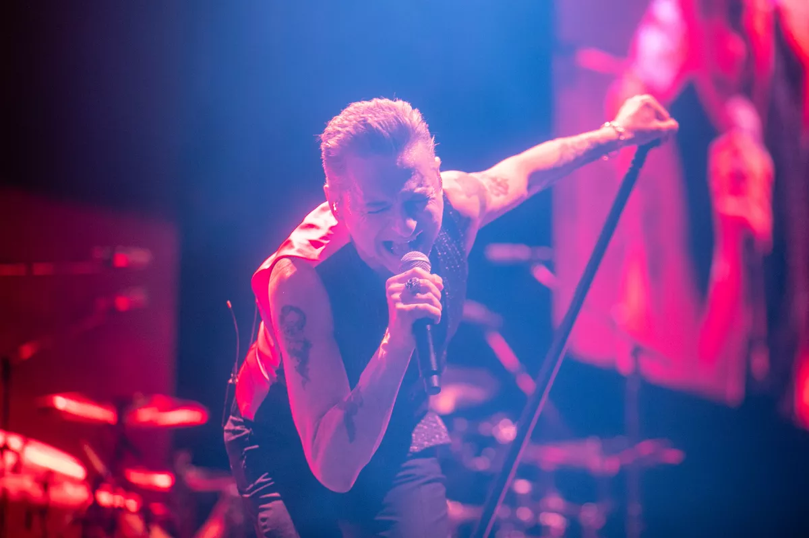

A DEATH-DEFYING EVENING WITH DEPECHE MODE

Forty-two years after the release of their debut album, the members of Depeche Mode — well, the surviving ones — are in on the joke of their somehow having become old guys.
As Dave Gahan, 60, and Martin Gore, 61, played their synth-rock classic “Enjoy the Silence” on Tuesday night at the Kia Forum, images of a bejeweled skull rotated on a wall of video screens behind them; later, Gahan noticed the thousands of glowing smartphones in the crowd and said, “Everybody used to have cigarette lighters, but I guess that’s not a thing anymore.”
That Depeche Mode would still be on the road in 2023 — Tuesday’s concert came just days into a lengthy world tour behind the band’s new studio LP, “Memento Mori” — is no great surprise. Rock nostalgia is a huge business, and right now business is good for Depeche Mode, which three years ago was inducted into the Rock & Roll Hall of Fame and which recently had its late-’80s “Never Let Me Down Again” prominently featured in HBO’s hit “The Last of Us.” What’s more, echoes of the band’s signature style — sleek but hard-hitting, anxious yet darkly ecstatic — are detectable in music by younger acts like the Weeknd and Halsey, the latter of whom was in the audience at the Forum alongside the many OG types who looked like they’d been at Depeche Mode’s legendary Rose Bowl gig in 1988.
Yet none of that assured that the group would feel as vital as it did Tuesday in a gutsy two-hour performance that didn’t defy age so much as question what age has to mean. “Memento Mori” follows the unexpected death last year of Depeche Mode’s founding keyboardist, Andy Fletcher, and though the material was written before he died (of an aortic dissection), songs like “Ghosts Again” and “Before We Drown” ponder mortality with the same blend of vulnerability and determination that the group once applied to its thoughts on religion, alienation and sexual obsession. The result, paradoxically, is Depeche Mode’s most alive-sounding album in years.
Dressed in a suit jacket he slipped off after two songs to reveal a vest with no shirt beneath it, Gahan had a Michael Imperioli-in-“The White Lotus” vibe as he crooned through the moody philosophy of the new LP’s “My Cosmos Is Mine” and “Wagging Tongue.” Gore, who wore an ash-colored jacket printed with more skulls, switched between guitar and keyboards and took over lead vocals for “Soul With Me,” a very pretty ballad from “Memento Mori” about “heading for the ever after.”
Against the throbbing bass and blipping synths of “Ghosts Again,” one of several tracks on the album Gore co-wrote with Richard Butler of the Psychedelic Furs, Gahan twirled across the stage like a goth(-ier) Stevie Nicks — a heartening sign that he and Gore are finding some solace in performing these songs suffused with grief.
As strong as “Memento Mori” is, nobody came to the Forum just to hear new stuff. Rounded out by Christian Eigner on drums and Peter Gordeno on keyboards, Depeche Mode luxuriated in the sensual gloom of oldies including “Walking in My Shoes,” “Precious” and “World in My Eyes,” during which a vintage photo of a young Fletcher appeared on the video screen. “I Feel You” was grinding and lascivious, “John the Revelator” funky and clanging; “A Pain That I’m Used to” rode a morbid disco groove that wouldn’t quit.
Gahan and Gore began their encore with a bluesy acoustic rendition of “Condemnation” before revving up the chipper synth-pop of the band’s first big hit, “Just Can’t Get Enough.” Then they closed with “Never Let Me Down Again” and the happily inevitable “Personal Jesus,” both pumping with fresh blood you hope for their sake is still in supply by the time this tour circles back to Southern California in December for another six (!) arena dates.
“L.A., let’s see those hands,” Gahan told the crowd as the show reached its emotional climax. He took a moment to admire the sea of waving arms, then added, “It never gets old.”